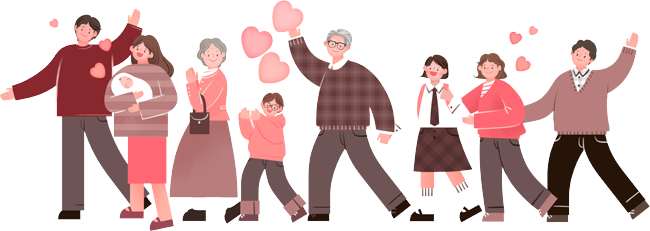

존경하는 88만 청주시민 여러분!
통합 청주시가 출범하고 어느덧 열 돌을 맞이했습니다.
청주시와 역사적 동행을 하고 계신 88만 청주시민 여러분께
진심으로 감사를 드립니다.
청주시와 역사적 동행을 하고 계신 88만 청주시민 여러분께
진심으로 감사를 드립니다.
지난 10년은 모두가 함께 이룬 성과의 시간이었습니다.
헌정사상 최초로 주민주도의 자율통합을 이루었고
대한민국의 미래를 이끌어갈 첨단산업의 중심지로 자리매김하는 등
통합 청주시가 더욱 역동적으로 성장 발전해가는 성과들이
크게 나타나고 있습니다.
이제 우리는 청주청원 통합 10주년이라는 역사적인 대전환점에 와 있습니다.
희망찬 새 시대를 염원하던 통합의 정신을 되새기며
미래 100만 자족도시 청주를 향해
모두 함께 힘차게 나아갑시다.


2024. 6.
청주시장 이범석